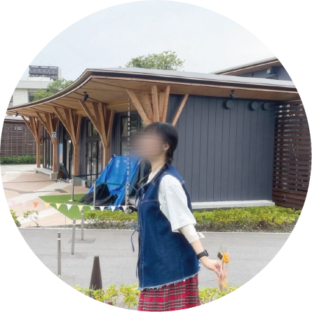

白井 くるみ
九州産業大学 ソーシャルデザイン学科 2年
小さい頃から絵を描くことが好きで特に何かをデザインすることが好きでした 昔からK-POPが好きで色んなグループが好きでたまにコンサートに行ってます ここ数年はENHYPENが一番好きでバイト代ほとんど彼らに持ってかれます笑 最近は編み物にハマっていて、帽子やかばん、小物など作っています 今の目標は貯金です。 年に何回か韓国旅行や国内旅行をしていますが大学を卒業するまでに行ったことのない国にも足を運んでみたいです! 自分の知らない世界を知ることが好きなのでもっと色んなことに挑戦していきたいです!